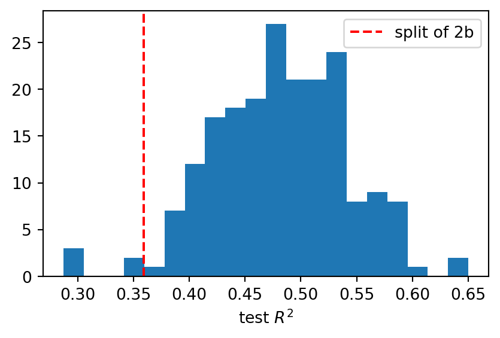
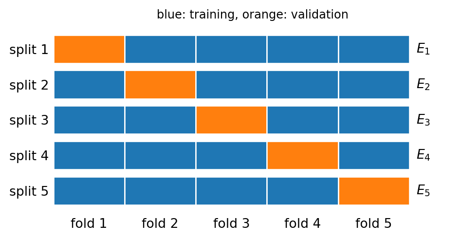
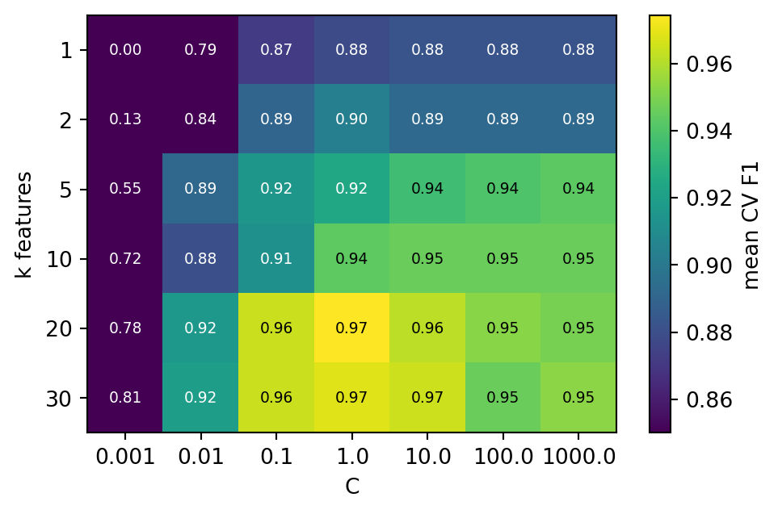
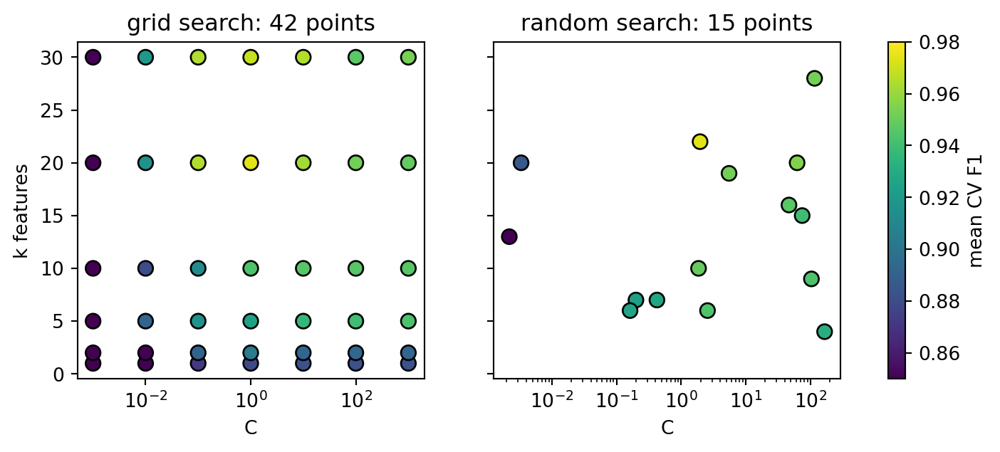
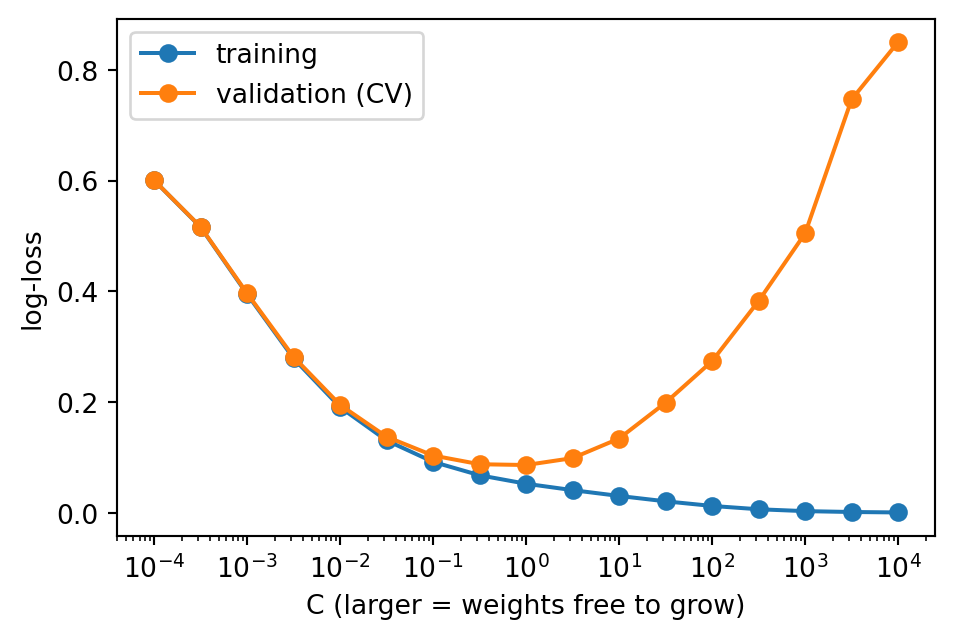
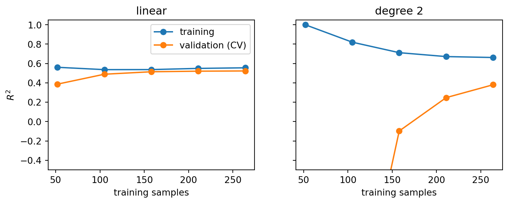
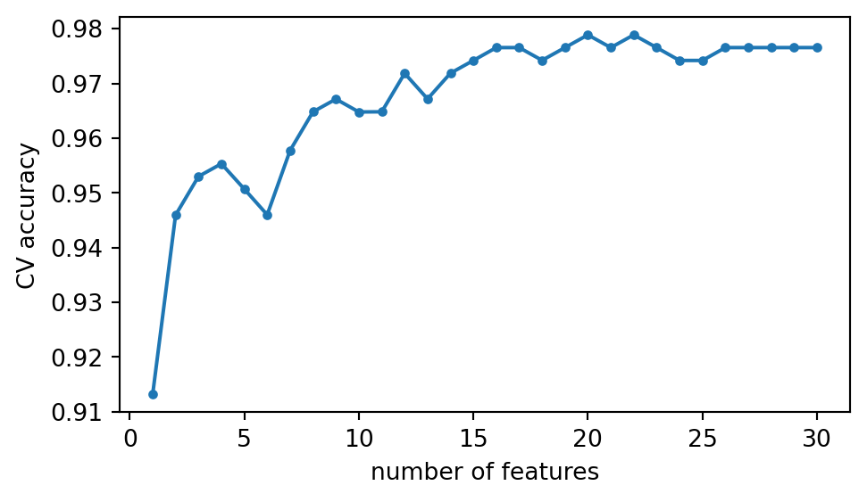

(np.float64(0.0),
np.float64(1.0),
np.float64(-0.44000000000000006),
np.float64(0.44000000000000006))Validation and model selection
Introduction to Artificial Intelligence and Machine Learning 4
Jiabao Xu
Jiabao.Xu@glasgow.ac.uk
Massimo Vassalli
massimo.vassalli@glasgow.ac.uk
From a score to a choice
In 4a we learned what to measure. Every number, though, came from a single train/test split, and every model had fixed settings (C = 1, all features, threshold 0.5). Today:
- how much a score depends on the split, and how to estimate performance more reliably: cross-validation
- how to choose the settings of a model (hyperparameters) without spoiling the test set: grid and random search
- how to see overfitting and underfitting in the data: validation and learning curves
- how to choose features by asking the model: wrapper methods
Note
This is the last lecture needed for CW1: it completes the pipeline of 3a (model), 3b (pre-processing) and 4a (metrics).
How reliable is one split?
The linear model of 2b on all ten diabetes features, evaluated on 200 different random train/test splits:
from sklearn.datasets import load_diabetes
from sklearn.linear_model import LinearRegression
from sklearn.model_selection import train_test_split
Xd, yd = load_diabetes(return_X_y=True)
r2 = []
for seed in range(200):
Xa, Xb, ya, yb = train_test_split(Xd, yd, test_size=0.25,
random_state=seed)
r2.append(LinearRegression().fit(Xa, ya).score(Xb, yb))
r2 = np.array(r2)
fig, ax = plt.subplots(figsize=(5, 3))
ax.hist(r2, bins=20)
ax.axvline(r2[0], color="r", linestyle="--", label="split of 2b")
ax.set_xlabel("test $R^2$")
_ = ax.legend()
print(f"mean {r2.mean():.2f}, std {r2.std():.2f}, "
f"range [{r2.min():.2f}, {r2.max():.2f}]")mean 0.48, std 0.06, range [0.29, 0.65]
Same data, same model: the test \(R^2\) ranges from below 0.3 to 0.65, depending only on which 111 patients end up in the test set. The split used in 2b (random_state=0) happened to be one of the unlucky ones. With 442 samples, a single split is a noisy measurement; 4a’s bootstrap measured the noise of the test set, here the training set changes too.
Three sets, three jobs
When we use data to choose something (a value of C, a number of features, a model), the data used for the choice can no longer measure performance fairly: the choice has adapted to them. We need three sets:
- training set \(\mathcal{D}_{tr}\): the algorithm learns the parameters (\(\mathbf{w}\), \(b\))
- validation set \(\mathcal{D}_{va}\): we compare candidate models and settings, and pick one
- test set \(\mathcal{D}_{te}\): we measure the chosen model once, at the end
Warning
If the test set is used to choose, the reported score is optimistic: it is the best of many tries, not an honest estimate for new data. Knowledge of the test set has leaked into the model, exactly like the pre-processing leakage of 3b.
Evaluation rules
An evaluation rule is a recipe to estimate how a learning method performs on new data. We compare them on how much they cost and how much we can trust them.
- Resubstitution: train and evaluate on the same data
- Hold-out: one split (training/test, or training/validation/test)
- Cross-validation: many splits, each sample used once for evaluation
- Bootstrap (E0): train on a sample drawn with replacement, evaluate on the samples left out; the same resampling we used in 4a for confidence intervals, now applied to the training data
Resubstitution: grading your own homework
The score on the training data says how well the model fits what it has seen, not how it will do on new data. Polynomial features (3b) on diabetes make this visible:
from sklearn.pipeline import make_pipeline
from sklearn.preprocessing import PolynomialFeatures
Xd_train, Xd_test, yd_train, yd_test = train_test_split(Xd, yd, test_size=0.25,
random_state=0)
for deg in [1, 2, 3]:
m = make_pipeline(PolynomialFeatures(deg), LinearRegression()).fit(Xd_train, yd_train)
print(f"degree {deg}: {m[0].n_output_features_:3d} features "
f"train R2 = {m.score(Xd_train, yd_train):5.2f} test R2 = {m.score(Xd_test, yd_test):7.2f}")degree 1: 11 features train R2 = 0.56 test R2 = 0.36
degree 2: 66 features train R2 = 0.65 test R2 = 0.24
degree 3: 286 features train R2 = 0.92 test R2 = -22.04The more flexible the model, the better the training score, up to 0.92 with degree 3: 286 features for 331 training patients. On new patients the same model is a disaster. Resubstitution is never an evaluation rule for the final model; but the gap between training and validation scores will be a useful diagnostic later today.
Hold-out with a validation set
The simplest honest recipe: split twice, choose on the validation set, report on the test set. In 3b we left a question open: how many features should SelectKBest keep? \(k\) is a choice, to be made on validation data.
from sklearn.datasets import load_breast_cancer
from sklearn.feature_selection import SelectKBest, f_classif
from sklearn.linear_model import LogisticRegression
from sklearn.metrics import accuracy_score
from sklearn.preprocessing import StandardScaler
cancer = load_breast_cancer()
X, y = cancer.data, 1 - cancer.target # 1 = malignant
X_train, X_test, y_train, y_test = train_test_split( # 75% / 25%
X, y, test_size=0.25, stratify=y, random_state=0)
X_tr, X_va, y_tr, y_va = train_test_split( # 60% / 15% of the total
X_train, y_train, test_size=0.2, stratify=y_train, random_state=0)
for k in [1, 2, 5, 10, 20, 30]:
m = make_pipeline(StandardScaler(), SelectKBest(f_classif, k=k),
LogisticRegression()).fit(X_tr, y_tr)
print(f"k = {k:2d} validation accuracy = {accuracy_score(y_va, m.predict(X_va)):.3f}")k = 1 validation accuracy = 0.930
k = 2 validation accuracy = 0.953
k = 5 validation accuracy = 0.965
k = 10 validation accuracy = 0.977
k = 20 validation accuracy = 1.000
k = 30 validation accuracy = 1.000We pick the best \(k\), refit on training + validation, and evaluate once on the test set. Simple and cheap, but the choice rests on only 86 validation samples: \(k = 20\) and \(k = 30\) both classify all of them correctly, and the validation set cannot tell them apart. With another split, the ranking could change. The validation score is as noisy as the test score of the first slide.
Cross-validation
K-fold cross-validation uses every training sample for validation exactly once:

- split \(\mathcal{D}_{tr}\) into \(K\) disjoint folds of similar size
- for \(k = 1, \dots, K\): train on the other \(K-1\) folds, evaluate on fold \(k\), obtaining a score \(E_k\)
- average: \[ \hat E_{CV} = \frac{1}{K}\sum_{k=1}^{K} E_k \]
Every sample is used \(K-1\) times for training and once for validation. Typical values: \(K = 5\) or \(10\).
The \(K\) scores also give a spread: the standard deviation of \(E_k\) tells us how much the estimate depends on the split. The test set stays outside the whole procedure.
Cross-validation in scikit-learn
cross_val_score runs the whole loop: it clones the estimator, fits it \(K\) times and returns the \(K\) scores.
from sklearn.model_selection import KFold, cross_val_score
cv5 = KFold(n_splits=5, shuffle=True, random_state=0)
scores = cross_val_score(LinearRegression(), Xd_train, yd_train, cv=cv5, scoring="r2")
print("R2 per fold:", scores.round(2))
print(f"CV estimate: {scores.mean():.2f} +/- {scores.std():.2f}")R2 per fold: [0.61 0.4 0.51 0.59 0.51]
CV estimate: 0.52 +/- 0.08One number with an error bar, instead of one lucky (or unlucky) split. The spread between folds is of the same order as the spread of the 200 hold-out splits: that variability is real, and cross-validation makes it visible instead of hiding it. For the final model, scikit-learn does nothing more: we refit on the whole training set.
Note
scoring takes the names of 4a ("r2", "neg_mean_absolute_error", "f1", "roc_auc", …). Without it, the estimator’s default score is used: \(R^2\) for regressors, accuracy for classifiers.
Stratified K-fold
The wine data of 4a are stored sorted by class. Plain K-fold without shuffling cuts them in order:
from sklearn.datasets import load_wine
from sklearn.model_selection import StratifiedKFold
Xw, yw = load_wine(return_X_y=True)
wine_pipe = make_pipeline(StandardScaler(), LogisticRegression())
for name, cv in [("KFold, no shuffle ", KFold(3)),
("StratifiedKFold ", StratifiedKFold(3, shuffle=True, random_state=0))]:
print(name, "accuracy per fold:", cross_val_score(wine_pipe, Xw, yw, cv=cv).round(2))
for tr, va in cv.split(Xw, yw):
print(" validation fold classes:", np.bincount(yw[va], minlength=3))KFold, no shuffle accuracy per fold: [0.02 0.71 0.17]
validation fold classes: [59 1 0]
validation fold classes: [ 0 59 0]
validation fold classes: [ 0 11 48]
StratifiedKFold accuracy per fold: [0.98 0.97 0.98]
validation fold classes: [20 24 16]
validation fold classes: [20 23 16]
validation fold classes: [19 24 16]Without shuffling, the first fold contains almost only class 0, which the model never sees in training: accuracy close to zero. Stratified K-fold keeps the class proportions in every fold, as stratify=y did for the train/test split in 3a. scikit-learn uses it by default for classifiers when cv is an integer (but does not shuffle: set it explicitly when the order of the rows may carry information).
Other evaluation rules
| Rule | Fits | Notes |
|---|---|---|
| hold-out | 1 | cheap; noisy for small \(n\); large datasets |
| K-fold / stratified K-fold | \(K\) | the default; \(K = 5\) or \(10\) |
| repeated K-fold | \(R \times K\) | averages away the choice of the folds |
| shuffle-split | chosen | random train/validation splits, sizes free; large datasets |
| leave-one-out (LOO) | \(n\) | \(K = n\), one sample per fold; almost the whole set for training (low bias), but expensive and with high variance |
| bootstrap (E0) | \(B\) | train on a bootstrap sample, evaluate on the samples left out (4a); the basis of bagging (7a) |
import time
from sklearn.model_selection import LeaveOneOut, StratifiedShuffleSplit
pipe = make_pipeline(StandardScaler(), LogisticRegression())
for name, cv in [("5-fold ", StratifiedKFold(5, shuffle=True, random_state=0)),
("10-fold ", StratifiedKFold(10, shuffle=True, random_state=0)),
("shuffle ", StratifiedShuffleSplit(20, test_size=0.25, random_state=0)),
("LOO ", LeaveOneOut())]:
t0 = time.perf_counter()
s = cross_val_score(pipe, X_train, y_train, cv=cv)
print(f"{name} fits = {len(s):3d} accuracy = {s.mean():.3f} time = {time.perf_counter() - t0:.2f} s")5-fold fits = 5 accuracy = 0.977 time = 0.04 s
10-fold fits = 10 accuracy = 0.983 time = 0.07 s
shuffle fits = 20 accuracy = 0.974 time = 0.14 s
LOO fits = 426 accuracy = 0.981 time = 2.88 sWhen samples are not independent
Cross-validation assumes that the samples are independent. When they come in groups (several measurements of the same patient, several images of the same cell) or in time order, random folds put near-copies on both sides of the split. A simulation: 120 patients from the training set, each measured four times with a small measurement noise.
from sklearn.model_selection import GroupKFold
from sklearn.neighbors import KNeighborsClassifier
rng = np.random.default_rng(0)
idx = rng.choice(len(X_train), size=120, replace=False)
Xg = np.repeat(X_train[idx], 4, axis=0) # 4 measurements per patient
Xg = Xg + rng.normal(0, 0.02, Xg.shape) * X_train.std(axis=0) # small measurement noise
yg = np.repeat(y_train[idx], 4)
groups = np.repeat(np.arange(120), 4) # patient identifier
for name, est in [("logistic regression", make_pipeline(StandardScaler(), LogisticRegression())),
("1-nearest neighbour", make_pipeline(StandardScaler(), KNeighborsClassifier(1)))]:
plain = cross_val_score(est, Xg, yg, cv=KFold(5, shuffle=True, random_state=0)).mean()
grouped = cross_val_score(est, Xg, yg, cv=GroupKFold(5), groups=groups).mean()
print(f"{name}: KFold = {plain:.3f} GroupKFold = {grouped:.3f}")logistic regression: KFold = 0.985 GroupKFold = 0.967
1-nearest neighbour: KFold = 1.000 GroupKFold = 0.923The nearest-neighbour classifier (6b) predicts the label of the closest training sample: with random folds, that is almost always another measurement of the same patient, and the estimate is perfect and meaningless. GroupKFold keeps all the samples of a group in the same fold, so validation is done on new patients. For time series, TimeSeriesSplit always validates on data that come after the training data. Check how your CW1 dataset was collected.
More than one metric: cross_validate
cross_validate returns several metrics at once, the training scores and the timings:
import pandas as pd
from sklearn.model_selection import cross_validate
cv = StratifiedKFold(5, shuffle=True, random_state=0)
res = cross_validate(pipe, X_train, y_train, cv=cv, return_train_score=True,
scoring=["accuracy", "recall", "roc_auc", "neg_log_loss"])
print(pd.DataFrame(res).mean().round(3).to_string())fit_time 0.006
score_time 0.006
test_accuracy 0.977
train_accuracy 0.991
test_recall 0.962
train_recall 0.980
test_roc_auc 0.993
train_roc_auc 0.998
test_neg_log_loss -0.086
train_neg_log_loss -0.053Training and validation scores are close: no sign of overfitting. The fit time per fold (milliseconds here) multiplied by the number of fits is the cost of every evaluation rule and of every search we run next.
Warning
Pass the whole pipeline to the cross-validation, never data pre-processed in advance: scaling, imputation and feature selection must be refitted inside each training fold, otherwise the validation folds leak into the model (3b).
Comparing two models
To compare two models, evaluate them on the same folds and look at the difference fold by fold. All 30 features against the 5 best of the filter (3b):
from sklearn.feature_selection import SelectKBest, f_classif
full = make_pipeline(StandardScaler(), LogisticRegression())
five = make_pipeline(StandardScaler(), SelectKBest(f_classif, k=5), LogisticRegression())
s_full = cross_val_score(full, X_train, y_train, cv=cv) # the same cv object:
s_five = cross_val_score(five, X_train, y_train, cv=cv) # identical folds
diff = s_full - s_five
print("30 features:", s_full.round(3))
print(" 5 features:", s_five.round(3))
print("difference :", diff.round(3), f" mean {diff.mean():.3f} +/- {diff.std():.3f}")30 features: [0.965 0.976 0.988 0.965 0.988]
5 features: [0.977 0.953 0.941 0.953 0.894]
difference : [-0.012 0.024 0.047 0.012 0.094] mean 0.033 +/- 0.036The two means differ by about three points, and the full model wins in four folds out of five. Comparing the differences on the same folds removes the part of the variability due to the folds themselves (some folds are harder for every model). A difference that changes sign from fold to fold, or is smaller than its spread, is not evidence that one model is better: this is the CV version of the bootstrap intervals of 4a.
Hyperparameters
| Parameters | Hyperparameters | |
|---|---|---|
| set by | the learning algorithm, from data | us, before training |
| examples | \(\mathbf{w}\), \(b\); the mean and std of StandardScaler |
C, class_weight, the degree of PolynomialFeatures, \(k\) of SelectKBest, the learning rate \(\eta\) (2b), the threshold \(t\) (4a) |
| chosen by | minimising the loss on \(\mathcal{D}_{tr}\) | comparing validation scores |
Choosing hyperparameters is part of model selection: comparing models that differ in their settings (or in their type, CW2) and picking the best by an evaluation rule and a metric.
Hyperparameters of a pipeline
In a pipeline, every hyperparameter of every step can be tuned. scikit-learn names them step__parameter, with a double underscore:
from sklearn.feature_selection import SelectKBest, f_classif
pipe = make_pipeline(StandardScaler(), SelectKBest(f_classif), LogisticRegression())
print([name for name, step in pipe.steps])
print([p for p in pipe.get_params() if p.endswith(("__k", "__C", "__class_weight"))])
pipe.set_params(selectkbest__k=5, logisticregression__C=0.1)
print(pipe.get_params()["selectkbest__k"], pipe.get_params()["logisticregression__C"])['standardscaler', 'selectkbest', 'logisticregression']
['selectkbest__k', 'logisticregression__C', 'logisticregression__class_weight']
5 0.1make_pipeline names each step after its class, in lower case. This is how a search can set “the \(k\) of the selector and the C of the classifier” together, as promised in 3b.
Grid search with cross-validation
GridSearchCV tries every combination of a grid of values, estimates each by cross-validation, and refits the best one on the whole training set:
from sklearn.model_selection import GridSearchCV
grid = {"selectkbest__k": [1, 2, 5, 10, 20, 30], # a count: explicit values
"logisticregression__C": np.logspace(-3, 3, 7)} # a scale: 0.001 ... 1000
search = GridSearchCV(pipe, grid, cv=cv, scoring="f1")
t0 = time.perf_counter()
search.fit(X_train, y_train)
print(f"{len(search.cv_results_['params'])} combinations x 5 folds + 1 refit, "
f"{time.perf_counter() - t0:.1f} s")
best = search.best_params_
print(f"best: k = {best['selectkbest__k']}, C = {best['logisticregression__C']:g}"
f" CV F1 = {search.best_score_:.3f}")42 combinations x 5 folds + 1 refit, 1.8 s
best: k = 20, C = 1 CV F1 = 0.974np.logspace(-3, 3, 7) gives 7 values evenly spaced in \(\log_{10}\), from \(10^{-3}\) to \(10^{3}\): for a scale parameter like C, a factor of 10 matters, not a difference of 10. The fitted search behaves like the best pipeline: search.predict uses the model refitted on all of X_train with the best settings. We chose the \(F_1\) score (4a) because the positive class matters most: a different scoring may select a different model.
Looking at the grid
res = pd.DataFrame(search.cv_results_)
table = res.pivot(index="param_selectkbest__k",
columns="param_logisticregression__C",
values="mean_test_score")
fig, ax = plt.subplots(figsize=(5.5, 3.5))
im = ax.imshow(table.values, cmap="viridis", aspect="auto", vmin=0.85) # clip poor cells
for (i, jj), v in np.ndenumerate(table.values):
ax.text(jj, i, f"{v:.2f}", ha="center", va="center", fontsize=7,
color="white" if v < 0.93 else "black")
ax.set_xticks(range(table.shape[1]), table.columns)
ax.set_yticks(range(table.shape[0]), table.index)
ax.set_xlabel("C")
ax.set_ylabel("k features")
_ = fig.colorbar(im, ax=ax, label="mean CV F1")
Very small C (strong limit on the weights) or a single feature give poor models; a broad region of the grid is almost equally good. Differences of a few thousandths inside that plateau are below the fold-to-fold spread: do not over-interpret the exact winner. Plotting the grid tells you whether the best value is inside the range (good) or at its edge (extend the grid).
The test set, finally
Only now, with all choices made, we use the test set, once:
best CV F1 (used to choose): 0.974
test F1 (reported) : 0.943The test score is lower than the best CV score. Part of it is noise (143 test samples), part is systematic: best_score_ is the maximum of 42 noisy estimates, and the maximum of noisy numbers is biased upwards. This is why the score used to choose cannot be the score we report.
Nested cross-validation
The search is itself a learning procedure: give it data, it returns a fitted model. So it can be cross-validated like any estimator. An inner loop chooses the hyperparameters, an outer loop evaluates the whole procedure on folds the search never saw:
small_grid = {"selectkbest__k": [5, 10, 20, 30], "logisticregression__C": [0.01, 0.1, 1, 10]}
inner = GridSearchCV(pipe, small_grid, cv=cv, scoring="f1")
outer_cv = StratifiedKFold(5, shuffle=True, random_state=1)
t0 = time.perf_counter()
outer = cross_val_score(inner, X_train, y_train, cv=outer_cv, scoring="f1")
print(f"nested CV F1 = {outer.mean():.3f} +/- {outer.std():.3f} "
f"({time.perf_counter() - t0:.1f} s)")
print(f"inner best = {inner.fit(X_train, y_train).best_score_:.3f}")nested CV F1 = 0.968 +/- 0.011 (3.1 s)
inner best = 0.974The nested estimate is lower than the inner best_score_: it measures “grid search + logistic regression” honestly, without touching the test set. It costs \(K_{outer}\) times the search, so it is used when data are too few to spare a test set, or to compare procedures. Optional for CW1, where a held-out test set does the same job.
Random search
A grid grows quickly: with 3 hyperparameters and 10 values each, \(10^3\) combinations, times \(K\) fits. Random search draws a fixed number of combinations from distributions instead:
from scipy.stats import loguniform, randint
from sklearn.model_selection import RandomizedSearchCV
dists = {"selectkbest__k": randint(1, 31), # integers 1..30
"logisticregression__C": loguniform(1e-3, 1e3)} # uniform in log scale
rsearch = RandomizedSearchCV(pipe, dists, n_iter=15, cv=cv, scoring="f1", random_state=0)
t0 = time.perf_counter()
rsearch.fit(X_train, y_train)
print(f"15 combinations, {time.perf_counter() - t0:.1f} s")
best = rsearch.best_params_
print(f"best: k = {best['selectkbest__k']}, C = {best['logisticregression__C']:.2f}"
f" CV F1 = {rsearch.best_score_:.3f}")15 combinations, 0.7 s
best: k = 22, C = 1.96 CV F1 = 0.974With about a third of the fits, random search finds a model as good as the grid. When only a few hyperparameters really matter, random sampling explores more distinct values of each of them than a grid of the same cost. loguniform is the natural choice for scale parameters like C, whose useful values span orders of magnitude.
Searching the hyperparameter space
Each combination of hyperparameters is a point in a space with one axis per hyperparameter; each point costs one cross-validation. Both searches of the previous slides, coloured by their CV \(F_1\):
fig, axs = plt.subplots(1, 2, figsize=(9, 3.2), sharey=True)
for ax, s, title in [(axs[0], search, "grid search: 42 points"),
(axs[1], rsearch, "random search: 15 points")]:
r = s.cv_results_
C = np.array(r["param_logisticregression__C"], dtype=float)
k = np.array(r["param_selectkbest__k"], dtype=float)
sc = ax.scatter(C, k, c=r["mean_test_score"], vmin=0.85, vmax=0.98,
cmap="viridis", s=60, edgecolor="k")
ax.set_xscale("log")
ax.set_xlabel("C")
ax.set_title(title)
axs[0].set_ylabel("k features")
_ = fig.colorbar(sc, ax=axs, label="mean CV F1")
The grid tests only 7 distinct values of C and 6 of \(k\); the 15 random points test 15 distinct values of each. With \(p\) hyperparameters the space has \(p\) dimensions, and a grid with \(m\) values per axis needs \(m^p\) points: 4 hyperparameters with 10 values each are \(10^4\) cross-validations. Random search fixes the budget in advance, whatever \(p\) is, and spends it more evenly along each axis.
Tuning the threshold
In 4a we chose the threshold of the texture-only model by minimising the expected cost (a missed malignancy costs 10 false alarms), but on the test set. The honest way: the threshold is a hyperparameter, chosen by cross-validation. TunedThresholdClassifierCV does it with any scorer, including our cost:
from sklearn.metrics import confusion_matrix, make_scorer
from sklearn.model_selection import TunedThresholdClassifierCV
def neg_cost(y_true, y_pred, c_fp=1, c_fn=10): # higher is better
tn, fp, fn, tp = confusion_matrix(y_true, y_pred, labels=[0, 1]).ravel()
return -(c_fp * fp + c_fn * fn) / len(y_true)
j = list(cancer.feature_names).index("mean texture")
weak = make_pipeline(StandardScaler(), LogisticRegression())
tuned = TunedThresholdClassifierCV(weak, scoring=make_scorer(neg_cost), cv=cv)
tuned.fit(X_train[:, [j]], y_train)
weak.fit(X_train[:, [j]], y_train)
print(f"threshold chosen by CV: {tuned.best_threshold_:.2f}")
print(f"test cost, t = 0.5 : {-neg_cost(y_test, weak.predict(X_test[:, [j]])):.2f}")
print(f"test cost, tuned t : {-neg_cost(y_test, tuned.predict(X_test[:, [j]])):.2f}")threshold chosen by CV: 0.16
test cost, t = 0.5 : 2.36
test cost, tuned t : 0.59Cross-validation picks a threshold close to the one we found on the test set in 4a, and the cost on the untouched test set drops to about a quarter. make_scorer turns any function of (y_true, y_pred) into a scoring argument: when the costs of the errors are known, the model can be tuned for them directly.
The cost of tuning
| Search | Fits | Here |
|---|---|---|
| one model, K-fold | \(K\) | 5 |
| grid search | (number of combinations) \(\times K\) + 1 | \(42 \times 5 + 1 = 211\) |
| random search | n_iter \(\times K\) + 1 |
\(15 \times 5 + 1 = 76\) |
| nested CV of a grid search | \(K_{outer} \times\) (grid search) | \(5 \times 211 = 1055\) |
Our pipeline fits in milliseconds, so this costs seconds. A model that takes a minute to fit turns the same grid into three and a half hours. Practical rules:
- start coarse (orders of magnitude, few values), then refine around the best region
- prefer random search when there are more than two or three hyperparameters
- use
n_jobs=-1to run the fits in parallel on all processor cores - report how the search was done (grid, ranges, \(K\), metric): it is part of the method
Seeing overfitting
How does the validation score change as a model becomes more flexible? A validation curve plots training and validation scores against one hyperparameter. Here C of the breast cancer pipeline, with the log-loss:
from sklearn.model_selection import validation_curve
Cs = np.logspace(-4, 4, 17)
tr, va = validation_curve(
make_pipeline(StandardScaler(), LogisticRegression()), X_train, y_train,
param_name="logisticregression__C", param_range=Cs, cv=cv, scoring="neg_log_loss")
fig, ax = plt.subplots(figsize=(5.5, 3.5))
ax.semilogx(Cs, -tr.mean(axis=1), "o-", label="training")
ax.semilogx(Cs, -va.mean(axis=1), "o-", label="validation (CV)")
ax.set_xlabel("C (larger = weights free to grow)")
ax.set_ylabel("log-loss")
_ = ax.legend()
Underfitting and overfitting
Reading the validation curve from left to right:
- small
C: the weights are kept small, the model is too rigid. Training and validation losses are both high and close: underfitting (high bias). - intermediate
C: the validation loss reaches its minimum, aroundC = 1here: the best compromise. - large
C: the training loss keeps decreasing towards zero, the validation loss rises again. The model fits the training data too closely, noise included: overfitting (high variance). The growing gap between the curves is the signature.
This is what 2b hinted at (train \(R^2\) above test \(R^2\)) and what the polynomial example showed: more flexibility always helps on the training data, but only up to a point on new data. Why this happens, and how the penalty behind C controls it, is the subject of 5a (bias–variance and regularisation).
Learning curves
A learning curve plots training and validation scores against the number of training samples. Two models on diabetes: the plain linear model and one with degree-2 polynomial features (66 features).
from sklearn.model_selection import learning_curve
fig, axs = plt.subplots(1, 2, figsize=(9, 3), sharey=True)
for ax, (name, est) in zip(axs, [("linear", LinearRegression()),
("degree 2", make_pipeline(PolynomialFeatures(2), LinearRegression()))]):
sizes, tr, va = learning_curve(est, Xd_train, yd_train, cv=cv5, scoring="r2",
train_sizes=np.linspace(0.2, 1.0, 5))
ax.plot(sizes, tr.mean(axis=1), "o-", label="training")
ax.plot(sizes, va.mean(axis=1), "o-", label="validation (CV)")
ax.set_title(name)
ax.set_xlabel("training samples")
axs[0].set_ylabel("$R^2$")
axs[0].set_ylim(-0.5, 1.05)
_ = axs[0].legend()
Reading learning curves
- linear: training and validation scores converge quickly to about 0.5 and stay there. More data will not help: the model is too simple to capture more of the structure (bias). To improve, we need better features or a more flexible model.
- degree 2: the training score is very high, the validation score far below and still rising (negative for small training sets, off the plot). The model has too many parameters for the data (variance). More data would help; so would fewer features or a limit on the weights (5a).
| Symptom | Diagnosis | Remedies |
|---|---|---|
| both scores low, close together | underfitting, high bias | more flexible model (weeks 6–7), better features |
| training high, validation low, large gap | overfitting, high variance | more data, fewer features, regularisation (5a), simpler model |
Note
Validation and learning curves are also used in the labs: run them on your CW1 model to support the choices in the report.
Feature selection as model selection
In 3b we met the three families of feature selection. The number of features \(k\) is a hyperparameter, and we have just tuned it for the filter SelectKBest. Wrapper methods go further: they search for the subset of features that gives the best validation score of a given model.
| Family | Idea | Where |
|---|---|---|
| filter | score each feature on its own (correlation, F-test, mutual information) | 3b |
| wrapper | try subsets of features, keep the one with the best CV score of the model | today |
| embedded | the model selects while training (Lasso sets weights to zero) | 5a |
Trying all \(2^d\) subsets is impossible (\(2^{30} \approx 10^9\) for breast cancer), so wrappers search greedily: one feature at a time, without going back on previous decisions.
Sequential feature selection
Forward selection starts from no features and, at each step, adds the one that most improves the CV score; backward selection starts from all features and removes the least useful one.
from sklearn.feature_selection import SequentialFeatureSelector
names = cancer.feature_names
sfs = make_pipeline(StandardScaler(),
SequentialFeatureSelector(LogisticRegression(), n_features_to_select=5,
direction="forward", cv=cv),
LogisticRegression())
kbest = make_pipeline(StandardScaler(), SelectKBest(f_classif, k=5), LogisticRegression())
for name, est in [("wrapper (SFS)", sfs), ("filter (k best)", kbest)]:
est.fit(X_train, y_train)
print(f"{name}: CV accuracy = {cross_val_score(est, X_train, y_train, cv=cv).mean():.3f}")
print(" ", ", ".join(names[est[1].get_support()]))wrapper (SFS): CV accuracy = 0.962
texture error, worst radius, worst texture, worst smoothness, worst compactness
filter (k best): CV accuracy = 0.944
mean perimeter, mean concave points, worst radius, worst perimeter, worst concave pointsThe filter picks the five features most correlated with the diagnosis, but they measure almost the same thing (radius, perimeter, concave points). The wrapper evaluates features together and picks complementary ones (size, texture, shape), with a better CV score. The price: forward selection of 5 out of 30 features costs about \(30 + 29 + 28 + 27 + 26 = 140\) CV runs.
Recursive feature elimination
RFE fits the model on all features, removes the one with the smallest weight \(|w_j|\) (features must be scaled), and repeats. RFECV chooses the number of features by cross-validation:
from sklearn.feature_selection import RFECV
rfe = make_pipeline(StandardScaler(),
RFECV(LogisticRegression(), cv=cv, scoring="accuracy"))
rfe.fit(X_train, y_train)
sel = rfe[1]
acc = sel.cv_results_["mean_test_score"]
print("features kept:", sel.n_features_, f" CV accuracy {acc.max():.3f}")
print(f"with 10 features: CV accuracy {acc[9]:.3f}")
fig, ax = plt.subplots(figsize=(5.5, 3))
ax.plot(range(1, 31), acc, "o-", markersize=3)
ax.set_xlabel("number of features")
_ = ax.set_ylabel("CV accuracy")features kept: 20 CV accuracy 0.979
with 10 features: CV accuracy 0.965
The curve rises quickly and then forms a long plateau: ten well-chosen features already reach about 0.965, against 0.979 at the maximum with twenty: about one test sample in a hundred. RFECV returns the maximum, but a smaller set on the plateau is often the better choice for interpretation, at a negligible cost in accuracy.
Warning
Wrappers try many subsets and keep the best: like a grid search, they can overfit the validation folds. Keep them inside the pipeline, so that the selection is redone in every fold, and report the score of the final model on the test set.
What to look for
When you validate and tune a model, check:
- that the test set is put aside first and used once, at the end, for the final model
- that every pre-processing step is inside the pipeline passed to the cross-validation
- the evaluation rule: stratified K-fold for classification, shuffled when the order of the rows may carry information; \(K\) and the seed reported
- the CV estimate with its spread: differences smaller than the spread are not differences
- the metric used to choose (
scoring): it defines what “best” means (4a) - the grid: is the best value at its edge? Extend it. Is there a broad plateau? Prefer the simpler model.
- validation and learning curves: underfitting or overfitting, and what would help
- that
best_score_is not reported as the final performance
Suggested readings and activities
Suggested readings:
- Model evaluation rules and model selection are treated in Machine Learning with Python, in the chapters on model evaluation and selection and on feature selection.
- The scikit-learn user guide on cross-validation, tuning the hyperparameters, validation and learning curves, and feature selection.
Suggested activities:
- Repeat the 200-split experiment with
cross_val_scoreand 5 folds, using 200 different shuffling seeds: is the spread of the CV estimate smaller than the spread of the hold-out score? - Run the grid search with
scoring="roc_auc"and withscoring="recall": do they choose the same model? - Add
"logisticregression__class_weight": [None, "balanced"]to the grid and run it on the imbalanced example of 4a. - Use
direction="backward"inSequentialFeatureSelector: does it select the same five features? How long does it take?
Assignment: CW1
With this lecture, all the tools for CW1 are in place. The coursework expects you to:
- keep a test set aside, and compare and tune models only by cross-validation on the training set
- tune the relevant hyperparameters (e.g.
C, the number of features) with a grid or random search inside a pipeline, and report how the search was done - use validation or learning curves to discuss underfitting and overfitting
- report the final model once on the test set, with the metrics of 4a and a baseline
Tip
Bring your questions to the CW1 lab next week. Deadlines, submission instructions and the marking rubric are on Moodle.

ENG4200 AI4